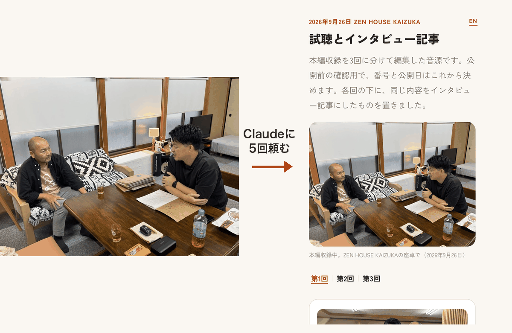
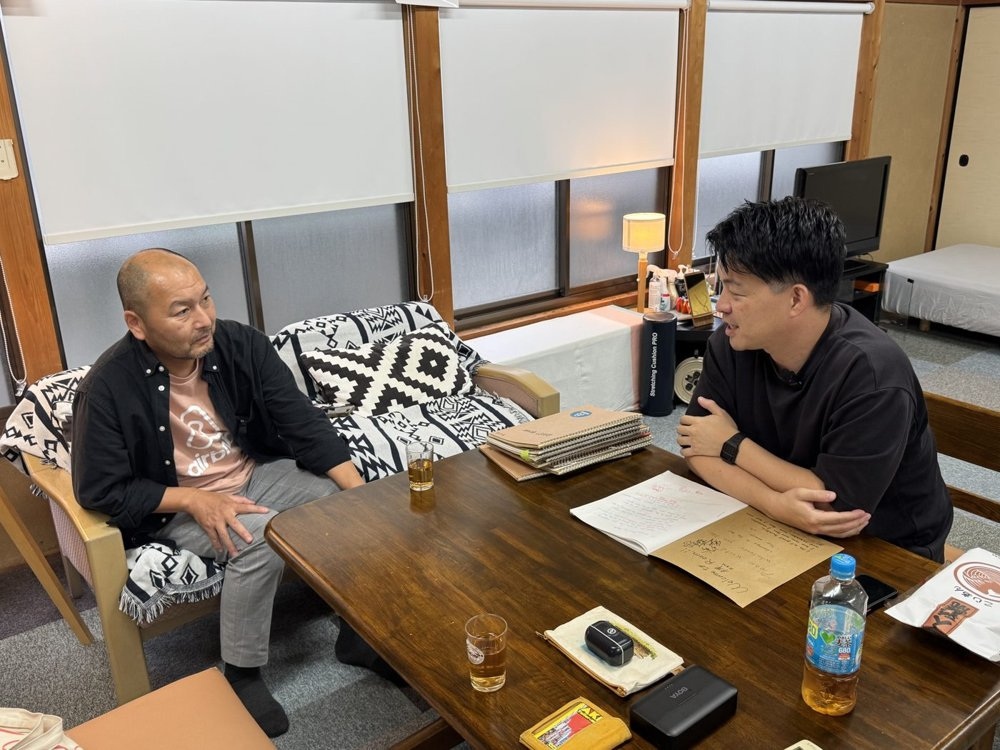
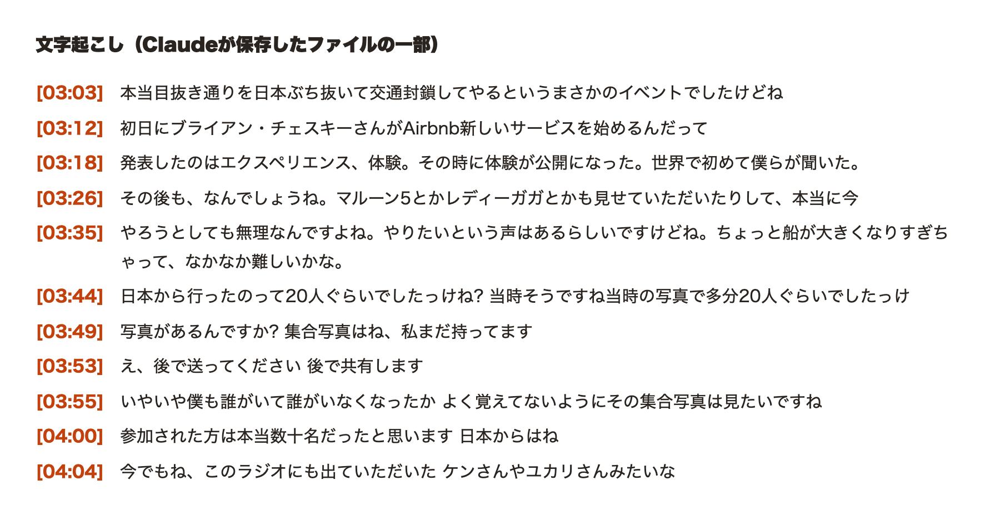
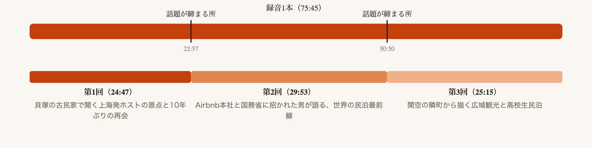
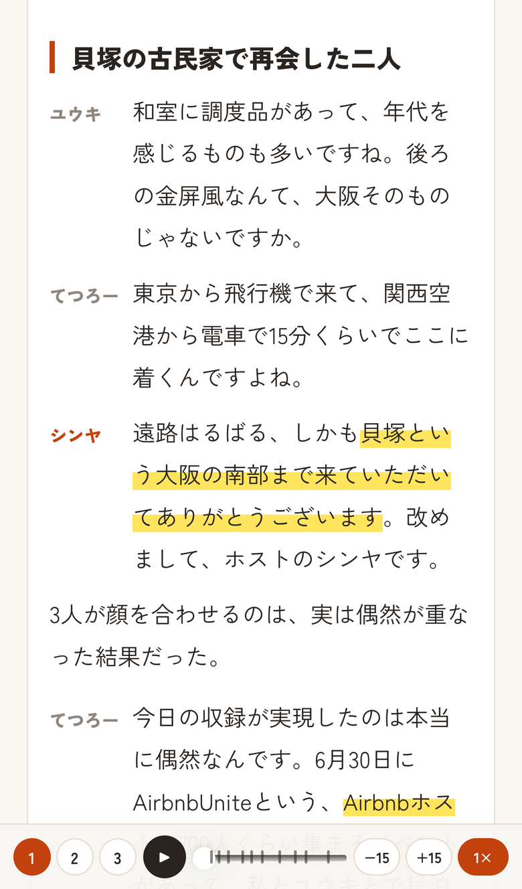
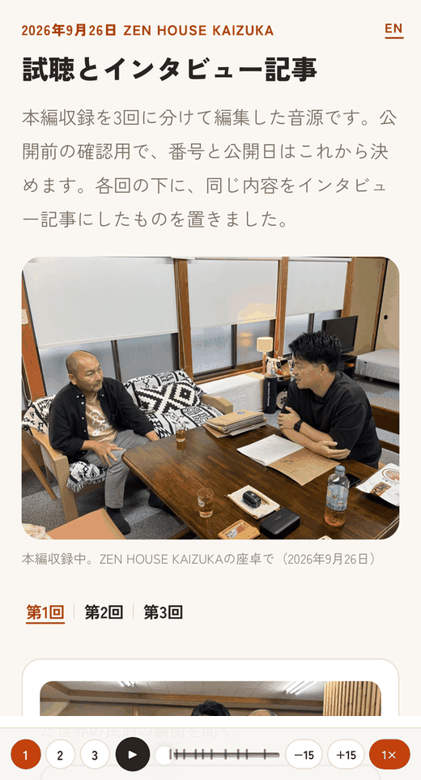
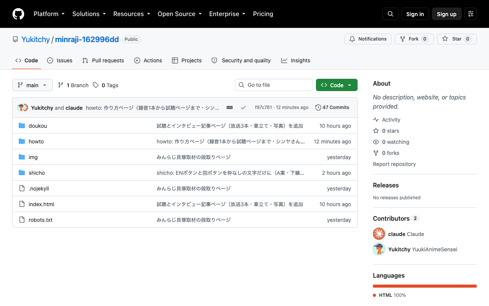

録音1本から試聴ページまで、Claudeと無料のGitHubで作る手順
この試聴ページは、収録した音声1本とClaude、それにGitHubの無料枠だけで作りました。サーバーは持っていません。人がやることは少なくて、決めることが5つと、Claudeに5回頼むこと。それだけで、自分の取材や対談でも同じものが作れます。

録音1本（左）が、Claudeに5回頼むとこのページ（右）になる
最初の「使う道具」と「人が決めること」は先に読んでください。「Claudeへの頼み方」は作るときに上から順に貼るもの、「つまずいた所」は困ったときに開くものです。
使う道具は3つ、全部無料枠で足りる
- 録音: iPhoneのボイスメモで十分です。マイクは買っていません。今回も1本のマイクを座卓に置いて、3人で話しました
- Claude: 文字起こしから記事、ページの組み立て、公開まで全部こちらに頼みます。ブラウザ版よりデスクトップアプリ（Claude Code）が向いています。ファイルを直接読み書きできるからです
- GitHub: 作ったページを置く場所です。GitHub Pagesという機能で、置いたファイルがそのままWebページになります。アカウントを作るところだけ自分でやります

収録の様子。座卓にマイク1本
人が決めるのは5つ、ここはClaudeに任せない
- 何を録るか。話す順番は決めず、聞きたいことだけ3つほど用意しました
- 出したくない話。収録の直後に本人に聞きます。今回は2箇所を音と記事の両方から外しました
- 回の切れ目。長い録音を分けるなら、話題が締まった所で切ります。Claudeに候補を出させて、最後は自分で決めます
- 写真。どの写真を使うかは自分で選びます。Claudeに選ばせると、目をつぶった1枚や関係ない外観を平気で出してきます
- 公開のYes。ページに出す前に、写っている人と話した人に見てもらいます。このページ自体がその確認用です
Claudeへの頼み方は5回、そのまま貼れる
音声ファイルを入れたフォルダでClaudeを開き、上から順に頼みます。1回ごとに結果を見て、気に入らなければ「ここを直して」と返せばいいです。
1. 文字起こし
「このフォルダの音声を文字起こしして、話している人ごとに名前をつけて保存して」

出てきたもの: 文字起こしファイルの一部
2. 回に分ける
「文字起こしを読んで、話題が締まる所で3回に分ける案を出して。それぞれ何分になるかも」

出てきたもの: 録音を3回に分ける案
3. 記事にする
「第1回の文字起こしを、話し言葉のまま読めるインタビュー記事にして。見出しをつけて、聴きどころを時刻つきで3つ選んで」（第2回、第3回も同じ）

出てきたもの: できたインタビュー記事
4. ページにする
「3回分の音声と記事を1枚のページにして。スマホで読めて、再生ボタンと章の目盛りがあって、日本語と英語を切り替えられるように」

出てきたもの: スマホで開いた試聴ページ
5. 公開する
「このページをGitHub Pagesで公開して。URLを教えて」

公開後のGitHub。ここに置いたファイルがそのままWebページになる
5番目でGitHubのアカウント作成とログインだけ自分で求められます。それ以外の操作はClaudeがやります。
つまずいた所は3つ、先に知っておくと1日浮く
- iPhoneで開いたら真っ白だった。パソコンでは映るのに、Safariだけ真っ白。原因は英語切り替えの作り方の癖でしたが、大事なのはそこではなく、公開前に必ず自分のiPhoneで開くことです。Claudeの画面確認だけで「できた」と言わせないでください
- 直したのに古いままだった。GitHub Pagesは公開後10分ほど前の内容を見せ続けます。確認するときはURLの末尾に「?v=2」のような文字を足すと最新が出ます
- 出したくない話が記事に残っていた。音声から切っただけでは足りません。文字起こしと記事、それに英語版にもそのまま残っていて、あとから3か所を追いかけて消すことになりました。「この話は音と記事の両方から消して」と、両方を指定して頼みます
用語
- GitHub: プログラムやファイルを置いて共有するサービス。無料で使えます
- GitHub Pages: GitHubに置いたHTMLファイルをそのままWebページとして公開する機能。サーバー代はかかりません
- リポジトリ: GitHub上のフォルダのこと。ページ1つにつき1つ作ります
- 試聴ページ: 公開前に関係者だけで聴いて確認するためのページ。このサイトの「試聴とインタビュー記事」がそれです
分からない所はLINEグループで聞いてください。最終更新 2026年9月27日